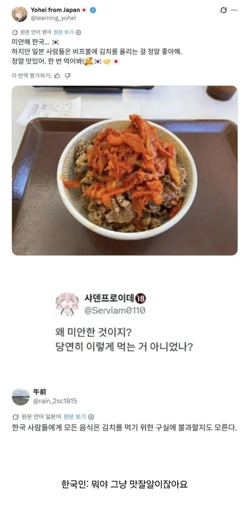

한국인들 : ????

한국인들 : ????
위에 참깨를 안뿌려서 사과한건가?
한국인은 카레에도 김치올려먹는다구
김치없이 카레를 먹어?
저거 플러스 김치를 따로 먹어야지
옆에 생김치 없어서 그런듯
근데 일본도 기무치라고 지들이 원조맛집이라고 했던거 같은데 어느순간 인정하게 됐지?
그거 루머야.. 아직도 그거 믿는사람이 있네
공자 한국인설 보고 욕하는 중국인들 보는것같다
ㄹㅇ 이 루머 아직도 믿는거 보니 나이대가 예상되는구만
https://www.dogdrip.net/304998339
함읽어봐 공자한국인설과 궤는 비슷할지몰라도 아예 똑같지는않음
루머라니! 몰랐음 잊고 살다가 이글보고 생각났음...ㅠ
기무치는 김치를 표기하려면 기무치밖에 안된다
맛잘알이네ㅋㅋ
난 김치없으면 카레안먹음
솔직히 김치를 하나씩 올려먹어야지 다 올려 때려먹는건 좀 아니라고 생각한다
생김치도 괜찮고 살짝 볶아서 올려도 좋지.
밥 고기가 뜨끈하니까 따로 작은 그릇에 덜어먹어야 시원한 맛이 계속되지
그럼 그동안 어케 쳐먹었는데?
개운한맛
곧 김치제육볶음에 도달하겠구만
이제좀 먹을 줄 아네
너이셰끼 참기름은?
안알려줘도 할줄안다니
너 김치에 재능있어
위에 들기름이랑 깨 좀....*
녀석, 조금씩 배워가는구나 (코쓲)
뭐야 평범한 김치제육이잖아
옳지 잘한다
소고기 김치 덮밥